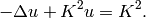
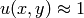

Singular Perturbation¶
Git reference: Example singular-perturbation.
We solve a singularly perturbed elliptic problem that exhibits a thin anisotropic boundary layer that is difficult to resolve.
The computational domain is the unit square, and the equation solved has the form

The boundary conditions are homogeneous Dirichlet. The right-hand side is chosen in this way
in order to keep the solution  inside the domain. For this presentation
we choose  but everything works for larger values of
but everything works for larger values of  as well. We find quite
important to perform initial refinements towards the boundary, thus providing a better
initial mesh for adaptivity. One does not have to do this, but then the convergence is slower.
The solution is shown in the following figure:
as well. We find quite
important to perform initial refinements towards the boundary, thus providing a better
initial mesh for adaptivity. One does not have to do this, but then the convergence is slower.
The solution is shown in the following figure:

Below we show meshes obtained using various types of adaptivity. The meshes do not correspond to the same level of accuracy since the low-order methods could not achieve the same error as hp-FEM. Therefore, compare not only the number of DOF but also the error level. Convergence graphs for all cases are shown at the end of this section.
Final mesh (h-FEM, p=1, anisotropic refinements): 34833 DOF, error 0.3495973568992 %
Final mesh (h-FEM, p=2, anisotropic refinements): 37097 DOF, error 0.014234904418008 %

Final mesh (hp-FEM, anisotropic refinements): 6821 DOF, error 7.322784149253e-05 %
DOF convergence graphs for h-FEM with linear and quadratic elements and the hp-FEM (anisotropic refinements enabled):

Corresponding CPU time convergence graphs:

And at the end let us compare hp-FEM with isotropic and anisotropic refinements:

Corresponding CPU time convergence graphs:

When using h-FEM, this difference becomes much larger. This is left for the reader to try.